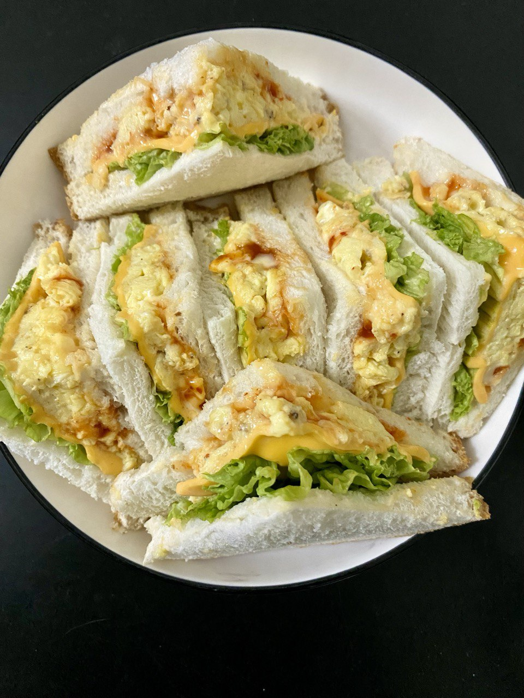

Sandwich
SANDWICH 🥪
-EGG
SANDWICH-

There are many types of sandwiches, like tuna, sardine, and egg sandwiches. But let’s be real, egg sandwiches will always be number one! The creamy richness of the egg, the kick from black pepper, and the crunch of fresh veggies like cucumber and lettuce make it a perfect combo. Simple, but guaranteed delicious every time!

BENEFITS
OF EGG SANDWICHES
- Contains a high source of protein
Eggs are rich in protein, which helps repair body tissues and provides long-lasting energy.
- Contains essential vitamins
Eggs have vitamin D, which is great for bones, vitamin B12, which is vital for the nervous system, and vitamin A, which is good for eyesight.
- Supports brain health
Eggs contain nutrients that enhance brain function and improve memory.
- Fiber from vegetables
Vegetables like lettuce, cucumber, or tomatoes are high in fiber and packed with nutrients.
- Balanced calories
Perfect for breakfast or a light snack, it provides energy without feeling too heavy.
INGREDIENTS
AND
INSTRUCTIONS
|
INGREDIENTS
-4 eggs
-2 tablespoons mayonnaise
-1 teaspoon mustard (optional)
-A pinch of black pepper and salt, to taste
-4 slices of bread (wholemeal or regular bread can be used)
-Fresh vegetables: lettuce, cucumber, tomato
|
|
INSTRUCTIONS
-Boil the eggs
-Place the eggs in a pot and boil for 8-10 minutes until fully cooked.
-Peel the shells and mash the eggs with a fork in a bowl.
Mix the ingredients
-Add mayonnaise, black pepper, and salt to the bowl. Mix well until it forms a creamy paste.
-Spread the egg paste onto one slice of bread. Add fresh vegetables like lettuce, cucumber, and tomato on top.
-Cover with another slice of bread.Cut and serve
|